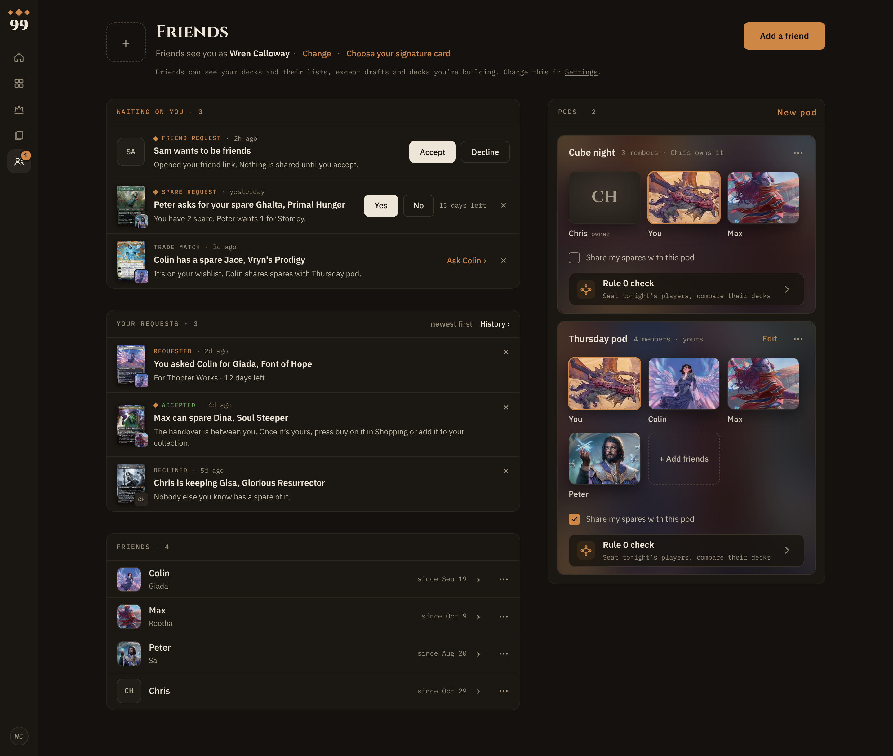
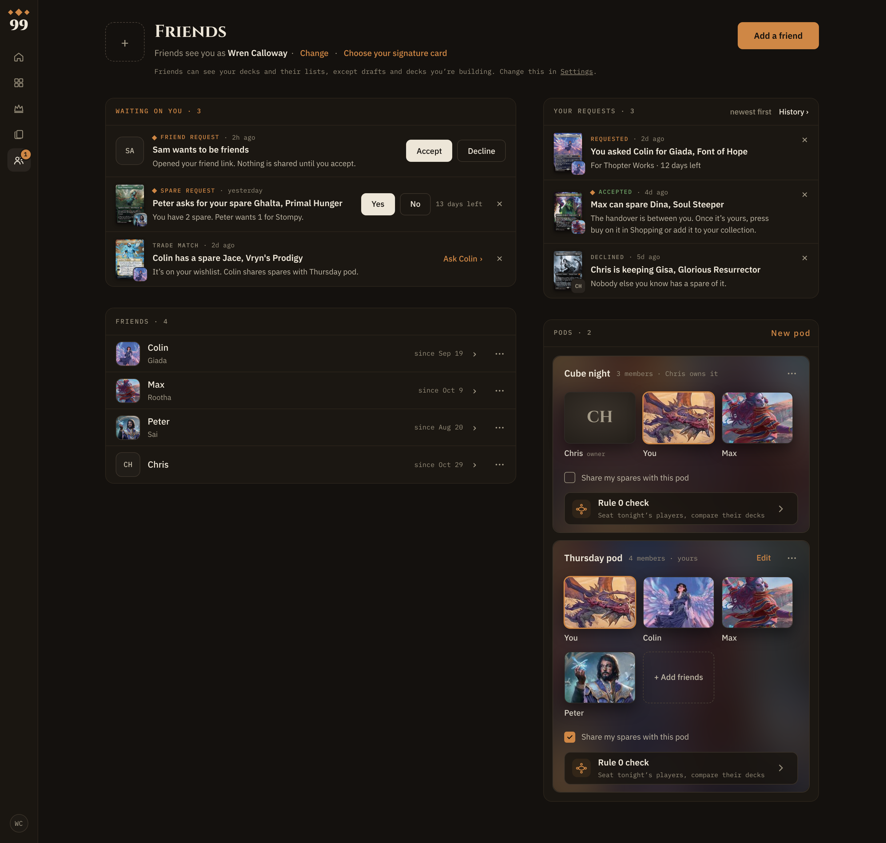
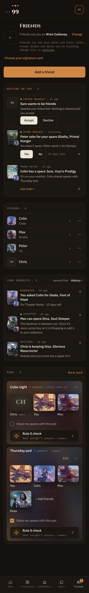

R1c · Friends with pods · 1440 and 390
The shipped page already splits into two columns from 1180: Waiting on you, Your requests and Friends on the left, Pods and open links on a 420 right column. With three of each, Friends falls to a 900px fold. Moving Your requests to the top of the right column puts Friends right under the inbox. The right column grows to 448 so a pod’s three seats still fit inside the new box.
D1 · today’s split, boxed

Waiting on you (3) and Your requests (3) fill the left column. Friends’ heading lands right at the fold (about 880px) with every row below it.
D2 · recommended: Your requests on the right

Left column: what needs you (Waiting on you), then who you know (Friends), starting about 520px down, well above the fold. Right column: what you’re waiting on (Your requests, with History ›), then Pods.
P1 · phone order

Phone keeps one column. Its order follows the page: Waiting on you, Friends, Your requests, Pods. Friends moves up here too, and reading order still matches what’s on screen.